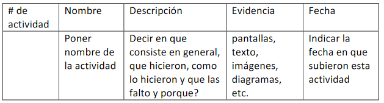
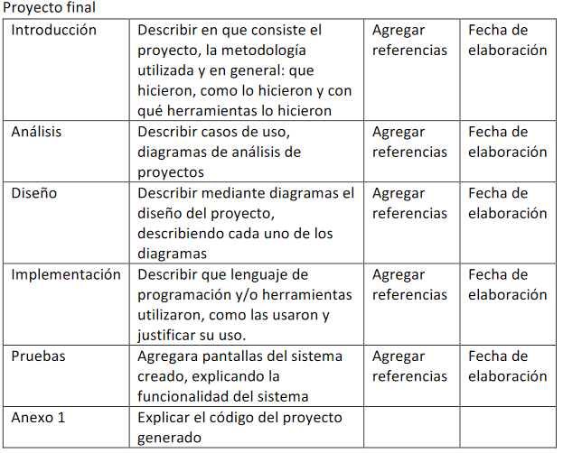

> Descripcion
Se deberá crear una página HTML que será utilizada como concentrado de actividades del curso,
así como portafolio de evidencias
- No es necesario utilizar algun lenguaje de programación web (JS,PHP,ASP)
- Debe tener las siguientes características
- Nombre de la Asignatura
- Nombre de los Integrantes (Por Apellido)
- Por Cada Actividad, se debe tener lo siguiente:

- Y el proyecto, debe contener las siguientes características:

> Evidencia
Nota: La página se encuentra hospedada en Github Page, puede visitarla mediante el siguiente enlace: https://vkhdez.github.io/appsweb-vha/. También, cabe aclarar que en estos momentos, seguimos trabajando en la sección de Notas de la Unidad 1,2 y 3, y que, en el momento en que estén completamente subidas, se eliminará esta pequeña nota.
A partir de la descripción dada, se comenzarón a trabajar en las versiones preliminares de la página.
Se realizó un estilo tradicional flat en la página para que la misma no tuviera elementos que obstruyeran la información principal del Index, ya que en este, se presentarán las actividades y proyectos realizados hasta el momento.
La demás información de los integrantes del equipo, se trasladó a la sección "About", colocada en la parte superior derecha del menú principal.
Por último, en el mismo menú, se encuntra la sección "Notes", donde se colocarán allí las notas del curso, las que tratarán sobre temas de HTML5, PHP y demás tópicos respecto al tema.
La versión final se puede encontrar en el respositorio de GITHUB